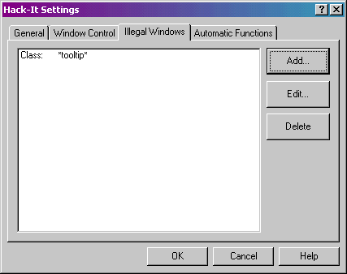
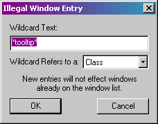

In the Settings dialog, the page marked “Illegal Windows” lets you configure window specifications that will ignored by Hack-It. There are many, many windows on a typical system at any given time, and a great deal of those windows are not ones you will normally want to show up in the list or be able to manipulate. Some are connected to system-critical processes that are best left alone. By specifying them as “Illegal” you can effectively hide them from anyone using Hack-It, to make for a safer and healthier environment.

